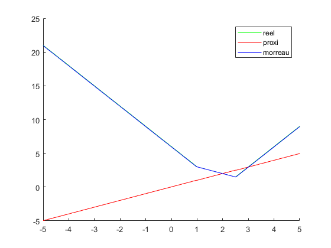

Contents
clear all; close all;
parametres
pas=0.01;
seuil=0.00001;
x_ini=2;
gamma=0.01;
calcul de mor
x_min=-5;pas_x=0.01;x_max=5;
x=x_min:pas_x:x_max;
z =2;
f=abs(x-1)+abs(2*x-5);
hold on
f1=@(x1) abs(x1-1) + abs(2*x1-5);
prox=@(x2)(x2+3*gamma).*(x2+3*gamma<1)+(x2+gamma).*((x2+gamma)>1).*((x2+gamma)<5/2)+(x2-3*gamma).*(x2-3*gamma>5/2)+1.*(x2>=1-3*gamma).*(x2<=1-gamma)+(5/2).*(x2<=(5/2)+3*gamma).*(x2>=(5/2)-gamma);
moro=@(x3) f1(prox(x3))+ (1/(2*gamma))*((-x3+prox(x3))^2);
proxi=zeros(1,length(x));
for i=1:length(x)
proxi(i)=prox(x(i));
end
mor=zeros(1,length(x));
for i=1:length(x)
mor(i)=moro(x(i));
end
hold on
plot(x,f,'g')
plot(x,proxi,'r')
plot(x,mor,'b')
legend('reel','proxi','morreau');
gradmor=gradient(mor,x);

descente de gradient 1d
x_bar=x_ini;
n=1;
diff=1;
while(abs(diff(n))>seuil)
x_bar2=x_bar(n)-pas*gradmor(round(length(x)/(x_max-x_min)*x_bar(n)+(length(x)-1)/2));
x_bar=[x_bar,x_bar2];
diff2=x_bar2-x_bar(n);
diff=[diff,diff2];
hold on
n=n+1;
end
axis([x_min x_max -inf inf])